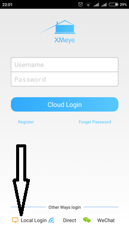
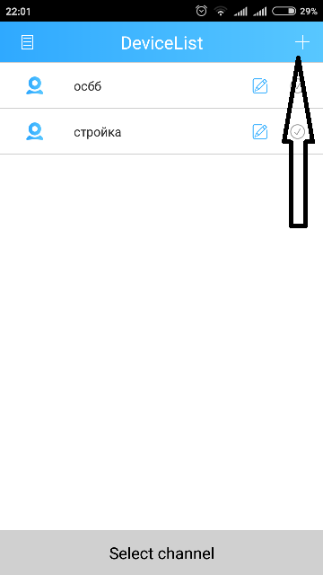
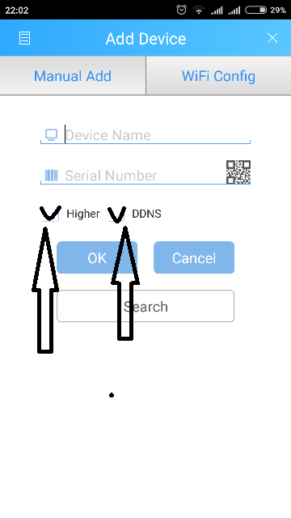
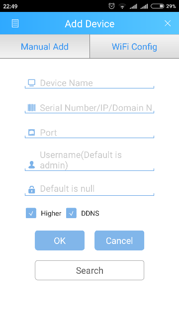

Налаштування для Смартфона.
В play market шукаємо програму XMEye і інсталюємо її.
Після установки відкриється основне вікно програми. Де вибираєм Local Login

Відкриється вікно програми . Для додавання пристроя натискаємо на +

4.Відкриється наступне вікно .Де ставимо галочки так як на малюнку.
 
Відкриється наступне вікно
Де заповнюємо поля.
Devise Name: bruklin
можна вписати будь-що
ім’я bruklin використано для прикладу.
Serial Number /IP/Domain: 46.63.114.6
Port: 34567
Username: dom
Password(«Замочек»): 123
Далі натискаємо ОК